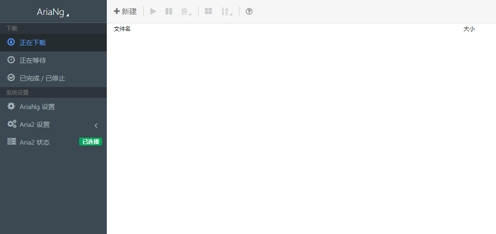

<!DOCTYPE html>
<html lang="en">
<head>
    <meta charset="utf-8">
    
    <title>让树莓派有点事做05--下载机 | kn0sky&#39;wiki</title>
    
    
        <meta name="keywords" content="kn0sky">
    
    <meta name="viewport" content="width=device-width, initial-scale=1, maximum-scale=1">
    <meta name="description" content="让树莓派有点事做05–下载机你的树莓派还在吃灰吗？来试试用树莓派来做下载机吧  历史文章： 让树莓派有点事做01–安装系统 让树莓派有点事做02–私有云服务 让树莓派有点事做03–外网访问 让树莓派有点事做04–git服务器  前言好久没有更新树莓派玩法文章了，最近看到下载的东西下载的好慢，又不想开一夜电脑去下载，于是我看了一眼树莓派，树莓派看了一眼我，一拍即合，开搞！ 本文将介绍使用aria2在">
<meta property="og:type" content="article">
<meta property="og:title" content="让树莓派有点事做05--下载机">
<meta property="og:url" content="http://kn0sky.com/wiki/%E6%8A%98%E8%85%BE%E7%AC%94%E8%AE%B0/%E6%A0%91%E8%8E%93%E6%B4%BE/%E8%AE%A9%E6%A0%91%E8%8E%93%E6%B4%BE%E6%9C%89%E7%82%B9%E4%BA%8B%E5%81%9A05--%E4%B8%8B%E8%BD%BD%E6%9C%BA/index.html">
<meta property="og:site_name" content="kn0sky&#39;wiki">
<meta property="og:description" content="让树莓派有点事做05–下载机你的树莓派还在吃灰吗？来试试用树莓派来做下载机吧  历史文章： 让树莓派有点事做01–安装系统 让树莓派有点事做02–私有云服务 让树莓派有点事做03–外网访问 让树莓派有点事做04–git服务器  前言好久没有更新树莓派玩法文章了，最近看到下载的东西下载的好慢，又不想开一夜电脑去下载，于是我看了一眼树莓派，树莓派看了一眼我，一拍即合，开搞！ 本文将介绍使用aria2在">
<meta property="og:locale" content="en_US">
<meta property="og:image" content="http://kn0sky.com/wiki/%E6%8A%98%E8%85%BE%E7%AC%94%E8%AE%B0/%E6%A0%91%E8%8E%93%E6%B4%BE/%E8%AE%A9%E6%A0%91%E8%8E%93%E6%B4%BE%E6%9C%89%E7%82%B9%E4%BA%8B%E5%81%9A05--%E4%B8%8B%E8%BD%BD%E6%9C%BA/image-20200608214729657.png">
<meta property="article:published_time" content="2020-06-08T01:36:11.000Z">
<meta property="article:modified_time" content="2020-06-09T04:37:12.000Z">
<meta property="article:author" content="kn0sky">
<meta property="article:tag" content="kn0sky">
<meta name="twitter:card" content="summary">
<meta name="twitter:image" content="http://kn0sky.com/wiki/%E6%8A%98%E8%85%BE%E7%AC%94%E8%AE%B0/%E6%A0%91%E8%8E%93%E6%B4%BE/%E8%AE%A9%E6%A0%91%E8%8E%93%E6%B4%BE%E6%9C%89%E7%82%B9%E4%BA%8B%E5%81%9A05--%E4%B8%8B%E8%BD%BD%E6%9C%BA/image-20200608214729657.png">
    

    
        <link rel="alternate" href="/atom.xml" title="kn0sky&#39;wiki" type="application/atom+xml">
    

    
        <link rel="icon" href="/favicon.ico">
    

    
<link rel="stylesheet" href="/libs/font-awesome/css/font-awesome.min.css">

    
<link rel="stylesheet" href="/libs/open-sans/styles.css">

    
<link rel="stylesheet" href="/libs/source-code-pro/styles.css">


    
<link rel="stylesheet" href="/css/style.css">

    
<script src="/libs/jquery/2.1.3/jquery.min.js"></script>

    
<script src="/libs/jquery/plugins/cookie/1.4.1/jquery.cookie.js"></script>

    
    
        
<link rel="stylesheet" href="/libs/lightgallery/css/lightgallery.min.css">

    
    
        
<link rel="stylesheet" href="/libs/justified-gallery/justifiedGallery.min.css">

    
    
    
    


    
        <script async src="//busuanzi.ibruce.info/busuanzi/2.3/busuanzi.pure.mini.js"></script>
    
<meta name="generator" content="Hexo 4.2.0"></head>
</html>
<body>
    <div id="container">
        <header id="header">
    <div id="header-main" class="header-inner">
        <div class="outer">
            <a href="/" id="logo">
                <i class="logo"></i>
                <span class="site-title">kn0sky&#39;wiki</span>
            </a>
            <nav id="main-nav">
                
                    <a class="main-nav-link" href="/">首页</a>
                
                    <a class="main-nav-link" href="/archives">归档</a>
                
                    <a class="main-nav-link" href="/categories">分类</a>
                
                    <a class="main-nav-link" href="/tags">标签</a>
                
                    <a class="main-nav-link" href="/about">关于</a>
                
            </nav>
            
            <div id="search-form-wrap">

    <form class="search-form">
        <input type="text" class="ins-search-input search-form-input" placeholder="Search">
        <button type="submit" class="search-form-submit"></button>
    </form>
    <div class="ins-search">
    <div class="ins-search-mask"></div>
    <div class="ins-search-container">
        <div class="ins-input-wrapper">
            <input type="text" class="ins-search-input" placeholder="Type something...">
            <span class="ins-close ins-selectable"><i class="fa fa-times-circle"></i></span>
        </div>
        <div class="ins-section-wrapper">
            <div class="ins-section-container"></div>
        </div>
    </div>
</div>
<script>
(function (window) {
    var INSIGHT_CONFIG = {
        TRANSLATION: {
            POSTS: 'Posts',
            PAGES: 'Pages',
            CATEGORIES: 'Categories',
            TAGS: 'Tags',
            UNTITLED: '(Untitled)',
        },
        ROOT_URL: '/',
        CONTENT_URL: '/content.json',
    };
    window.INSIGHT_CONFIG = INSIGHT_CONFIG;
})(window);
</script>

<script src="/js/insight.js"></script>


</div>
        </div>
    </div>
    <div id="main-nav-mobile" class="header-sub header-inner">
        <table class="menu outer">
            <tr>
                
                    <td><a class="main-nav-link" href="/">首页</a></td>
                
                    <td><a class="main-nav-link" href="/archives">归档</a></td>
                
                    <td><a class="main-nav-link" href="/categories">分类</a></td>
                
                    <td><a class="main-nav-link" href="/tags">标签</a></td>
                
                    <td><a class="main-nav-link" href="/about">关于</a></td>
                
                <td>
                    
    <div class="search-form">
        <input type="text" class="ins-search-input search-form-input" placeholder="Search">
    </div>

                </td>
            </tr>
        </table>
    </div>
</header>

        <div class="outer">
            
            
                <aside id="sidebar">
   
        
    <div class="widget-wrap" id="categories">
        <h3 class="widget-title">
            <span>categories</span>
            &nbsp;
            <a id="allExpand" href="#">
                <i class="fa fa-angle-double-down fa-2x"></i>
            </a>
        </h3>
        
        
        
         <ul class="unstyled" id="tree"> 
                    <li class="directory">
                        <a href="#" data-role="directory">
                            <i class="fa fa-folder"></i>
                            &nbsp;
                            XCTF攻防世界WP
                        </a>
                         <ul class="unstyled" id="tree"> 
                    <li class="directory">
                        <a href="#" data-role="directory">
                            <i class="fa fa-folder"></i>
                            &nbsp;
                            新手练习区
                        </a>
                         <ul class="unstyled" id="tree"> 
                    <li class="directory">
                        <a href="#" data-role="directory">
                            <i class="fa fa-folder"></i>
                            &nbsp;
                            REVERSE
                        </a>
                         <ul class="unstyled" id="tree">  <li class="file"><a href="/wiki/XCTF%E6%94%BB%E9%98%B2%E4%B8%96%E7%95%8CWP/%E6%96%B0%E6%89%8B%E7%BB%83%E4%B9%A0%E5%8C%BA/REVERSE/re001-open-source/">open-source Write Up</a></li>  </ul> 
                    </li> 
                     </ul> 
                    </li> 
                     </ul> 
                    </li> 
                    
                    <li class="directory">
                        <a href="#" data-role="directory">
                            <i class="fa fa-folder"></i>
                            &nbsp;
                            备忘笔记
                        </a>
                         <ul class="unstyled" id="tree">  <li class="file"><a href="/wiki/%E5%A4%87%E5%BF%98%E7%AC%94%E8%AE%B0/%E5%B8%B8%E7%94%A8%E5%B7%A5%E5%85%B7%E6%B1%87%E6%80%BB/">常用工具备忘录</a></li>  <li class="file"><a href="/wiki/%E5%A4%87%E5%BF%98%E7%AC%94%E8%AE%B0/%E6%90%AD%E5%BB%BAhexo%E5%8D%9A%E5%AE%A2%E5%A4%87%E5%BF%98%E5%BD%95/">搭建hexo博客备忘录</a></li>  </ul> 
                    </li> 
                    
                    <li class="directory">
                        <a href="#" data-role="directory">
                            <i class="fa fa-folder"></i>
                            &nbsp;
                            学习笔记
                        </a>
                         <ul class="unstyled" id="tree"> 
                    <li class="directory">
                        <a href="#" data-role="directory">
                            <i class="fa fa-folder"></i>
                            &nbsp;
                            51单片机学习笔记
                        </a>
                         <ul class="unstyled" id="tree">  <li class="file"><a href="/wiki/%E5%AD%A6%E4%B9%A0%E7%AC%94%E8%AE%B0/51%E5%8D%95%E7%89%87%E6%9C%BA%E5%AD%A6%E4%B9%A0%E7%AC%94%E8%AE%B0/51%E5%8D%95%E7%89%87%E6%9C%BA%E5%85%A5%E9%97%A801--LED%E6%B5%81%E6%B0%B4%E7%81%AF/">51单片机入门01--LED流水灯</a></li>  <li class="file"><a href="/wiki/%E5%AD%A6%E4%B9%A0%E7%AC%94%E8%AE%B0/51%E5%8D%95%E7%89%87%E6%9C%BA%E5%AD%A6%E4%B9%A0%E7%AC%94%E8%AE%B0/51%E5%8D%95%E7%89%87%E6%9C%BA%E5%85%A5%E9%97%A802--%E6%95%B0%E7%A0%81%E7%AE%A1/">51单片机入门02--数码管</a></li>  <li class="file"><a href="/wiki/%E5%AD%A6%E4%B9%A0%E7%AC%94%E8%AE%B0/51%E5%8D%95%E7%89%87%E6%9C%BA%E5%AD%A6%E4%B9%A0%E7%AC%94%E8%AE%B0/51%E5%8D%95%E7%89%87%E6%9C%BA%E5%85%A5%E9%97%A803--%E6%8C%89%E9%94%AE/">51单片机入门03--按键</a></li>  <li class="file"><a href="/wiki/%E5%AD%A6%E4%B9%A0%E7%AC%94%E8%AE%B0/51%E5%8D%95%E7%89%87%E6%9C%BA%E5%AD%A6%E4%B9%A0%E7%AC%94%E8%AE%B0/51%E5%8D%95%E7%89%87%E6%9C%BA%E5%85%A5%E9%97%A804--%E5%AE%9A%E6%97%B6&%E8%AE%A1%E6%95%B0%E5%99%A8/">51单片机入门04--定时&计数器</a></li>  </ul> 
                    </li> 
                    
                    <li class="directory">
                        <a href="#" data-role="directory">
                            <i class="fa fa-folder"></i>
                            &nbsp;
                            C++学习笔记
                        </a>
                         <ul class="unstyled" id="tree">  <li class="file"><a href="/wiki/%E5%AD%A6%E4%B9%A0%E7%AC%94%E8%AE%B0/C++%E5%AD%A6%E4%B9%A0%E7%AC%94%E8%AE%B0/C++%E8%AF%AD%E8%A8%80%E5%9F%BA%E7%A1%8001--%E5%88%9D%E8%A7%81C++/">C++基础01--初见C++</a></li>  </ul> 
                    </li> 
                    
                    <li class="directory">
                        <a href="#" data-role="directory">
                            <i class="fa fa-folder"></i>
                            &nbsp;
                            C语言学习笔记
                        </a>
                         <ul class="unstyled" id="tree">  <li class="file"><a href="/wiki/%E5%AD%A6%E4%B9%A0%E7%AC%94%E8%AE%B0/C%E8%AF%AD%E8%A8%80%E5%AD%A6%E4%B9%A0%E7%AC%94%E8%AE%B0/C%E8%AF%AD%E8%A8%80%E5%9F%BA%E7%A1%8001--%E5%88%9D%E8%A7%81C%E8%AF%AD%E8%A8%80/">C语言基础01--初见C语言</a></li>  <li class="file"><a href="/wiki/%E5%AD%A6%E4%B9%A0%E7%AC%94%E8%AE%B0/C%E8%AF%AD%E8%A8%80%E5%AD%A6%E4%B9%A0%E7%AC%94%E8%AE%B0/C%E8%AF%AD%E8%A8%80%E5%9F%BA%E7%A1%8002--%E6%9D%A1%E4%BB%B6%E8%AF%AD%E5%8F%A5/">C语言基础02--条件语句</a></li>  <li class="file"><a href="/wiki/%E5%AD%A6%E4%B9%A0%E7%AC%94%E8%AE%B0/C%E8%AF%AD%E8%A8%80%E5%AD%A6%E4%B9%A0%E7%AC%94%E8%AE%B0/C%E8%AF%AD%E8%A8%80%E5%9F%BA%E7%A1%8003--%E5%AE%8F&%E5%87%BD%E6%95%B0&%E6%95%B0%E7%BB%84/">C语言基础03--宏&函数&数组</a></li>  <li class="file"><a href="/wiki/%E5%AD%A6%E4%B9%A0%E7%AC%94%E8%AE%B0/C%E8%AF%AD%E8%A8%80%E5%AD%A6%E4%B9%A0%E7%AC%94%E8%AE%B0/C%E8%AF%AD%E8%A8%80%E5%9F%BA%E7%A1%8004--%E6%8C%87%E9%92%88/">C语言基础04--指针</a></li>  <li class="file"><a href="/wiki/%E5%AD%A6%E4%B9%A0%E7%AC%94%E8%AE%B0/C%E8%AF%AD%E8%A8%80%E5%AD%A6%E4%B9%A0%E7%AC%94%E8%AE%B0/C%E8%AF%AD%E8%A8%80%E5%9F%BA%E7%A1%8005--%E5%AD%97%E7%AC%A6%E4%B8%B2%E6%93%8D%E4%BD%9C/">C语言基础05--字符串操作</a></li>  <li class="file"><a href="/wiki/%E5%AD%A6%E4%B9%A0%E7%AC%94%E8%AE%B0/C%E8%AF%AD%E8%A8%80%E5%AD%A6%E4%B9%A0%E7%AC%94%E8%AE%B0/C%E8%AF%AD%E8%A8%80%E5%9F%BA%E7%A1%8006--%E5%AD%98%E5%82%A8%E7%B1%BB&%E5%86%85%E5%AD%98%E7%AE%A1%E7%90%86/">C语言基础06--存储类&内存管理</a></li>  <li class="file"><a href="/wiki/%E5%AD%A6%E4%B9%A0%E7%AC%94%E8%AE%B0/C%E8%AF%AD%E8%A8%80%E5%AD%A6%E4%B9%A0%E7%AC%94%E8%AE%B0/C%E8%AF%AD%E8%A8%80%E5%9F%BA%E7%A1%8007--%E6%96%87%E4%BB%B6%E6%93%8D%E4%BD%9C/">C语言基础07--文件操作</a></li>  <li class="file"><a href="/wiki/%E5%AD%A6%E4%B9%A0%E7%AC%94%E8%AE%B0/C%E8%AF%AD%E8%A8%80%E5%AD%A6%E4%B9%A0%E7%AC%94%E8%AE%B0/C%E8%AF%AD%E8%A8%80%E5%9F%BA%E7%A1%8008--%E7%BB%93%E6%9E%84%E4%BD%93/">C语言基础08--结构体</a></li>  <li class="file"><a href="/wiki/%E5%AD%A6%E4%B9%A0%E7%AC%94%E8%AE%B0/C%E8%AF%AD%E8%A8%80%E5%AD%A6%E4%B9%A0%E7%AC%94%E8%AE%B0/C%E8%AF%AD%E8%A8%80%E5%9F%BA%E7%A1%8009--C%E9%A2%84%E5%A4%84%E7%90%86%E5%99%A8%E5%92%8CC%E5%BA%93/">C语言基础09--C预处理器和C库</a></li>  </ul> 
                    </li> 
                    
                    <li class="directory">
                        <a href="#" data-role="directory">
                            <i class="fa fa-folder"></i>
                            &nbsp;
                            Web安全学习笔记
                        </a>
                         <ul class="unstyled" id="tree"> 
                    <li class="directory">
                        <a href="#" data-role="directory">
                            <i class="fa fa-folder"></i>
                            &nbsp;
                            SQLi
                        </a>
                         <ul class="unstyled" id="tree"> 
                    <li class="directory">
                        <a href="#" data-role="directory">
                            <i class="fa fa-folder"></i>
                            &nbsp;
                            实战
                        </a>
                         <ul class="unstyled" id="tree">  <li class="file"><a href="/wiki/%E5%AD%A6%E4%B9%A0%E7%AC%94%E8%AE%B0/Web%E5%AE%89%E5%85%A8%E5%AD%A6%E4%B9%A0%E7%AC%94%E8%AE%B0/SQLi/%E5%AE%9E%E6%88%98/%E6%9F%90%E7%BD%91%E7%AB%99%E5%AD%98%E5%9C%A8%E4%BA%8B%E4%BB%B6%E5%9E%8Bsql%E6%B3%A8%E5%85%A501/">某网站存在事件型sql注入01</a></li>  </ul> 
                    </li> 
                     <li class="file"><a href="/wiki/%E5%AD%A6%E4%B9%A0%E7%AC%94%E8%AE%B0/Web%E5%AE%89%E5%85%A8%E5%AD%A6%E4%B9%A0%E7%AC%94%E8%AE%B0/SQLi/sqli%E5%9F%BA%E7%A1%80/">sql注入基础学习</a></li>  </ul> 
                    </li> 
                    
                    <li class="directory">
                        <a href="#" data-role="directory">
                            <i class="fa fa-folder"></i>
                            &nbsp;
                            XSS
                        </a>
                         <ul class="unstyled" id="tree"> 
                    <li class="directory">
                        <a href="#" data-role="directory">
                            <i class="fa fa-folder"></i>
                            &nbsp;
                            练习平台
                        </a>
                         <ul class="unstyled" id="tree">  <li class="file"><a href="/wiki/%E5%AD%A6%E4%B9%A0%E7%AC%94%E8%AE%B0/Web%E5%AE%89%E5%85%A8%E5%AD%A6%E4%B9%A0%E7%AC%94%E8%AE%B0/XSS/%E7%BB%83%E4%B9%A0%E5%B9%B3%E5%8F%B0/XSS_Challenges/">XSS_Challenges Write Up</a></li>  </ul> 
                    </li> 
                     <li class="file"><a href="/wiki/%E5%AD%A6%E4%B9%A0%E7%AC%94%E8%AE%B0/Web%E5%AE%89%E5%85%A8%E5%AD%A6%E4%B9%A0%E7%AC%94%E8%AE%B0/XSS/XSS%E5%9F%BA%E7%A1%80/">XSS基础学习</a></li>  </ul> 
                    </li> 
                     </ul> 
                    </li> 
                    
                    <li class="directory">
                        <a href="#" data-role="directory">
                            <i class="fa fa-folder"></i>
                            &nbsp;
                            前端入门学习笔记
                        </a>
                         <ul class="unstyled" id="tree">  <li class="file"><a href="/wiki/%E5%AD%A6%E4%B9%A0%E7%AC%94%E8%AE%B0/%E5%89%8D%E7%AB%AF%E5%85%A5%E9%97%A8%E5%AD%A6%E4%B9%A0%E7%AC%94%E8%AE%B0/%E5%89%8D%E7%AB%AF%E5%85%A5%E9%97%A801--HTML&CSS%E5%9F%BA%E7%A1%80/">前端入门01--HTML和CSS基础</a></li>  </ul> 
                    </li> 
                    
                    <li class="directory">
                        <a href="#" data-role="directory">
                            <i class="fa fa-folder"></i>
                            &nbsp;
                            半导体物理学习笔记
                        </a>
                         <ul class="unstyled" id="tree">  <li class="file"><a href="/wiki/%E5%AD%A6%E4%B9%A0%E7%AC%94%E8%AE%B0/%E5%8D%8A%E5%AF%BC%E4%BD%93%E7%89%A9%E7%90%86%E5%AD%A6%E4%B9%A0%E7%AC%94%E8%AE%B0/%E5%8D%8A%E5%AF%BC%E4%BD%93%E7%89%A9%E7%90%8601--%E8%83%BD%E5%B8%A6%E7%90%86%E8%AE%BA/">半导体物理01--能带理论</a></li>  </ul> 
                    </li> 
                    
                    <li class="directory">
                        <a href="#" data-role="directory">
                            <i class="fa fa-folder"></i>
                            &nbsp;
                            原理笔记
                        </a>
                         <ul class="unstyled" id="tree">  <li class="file"><a href="/wiki/%E5%AD%A6%E4%B9%A0%E7%AC%94%E8%AE%B0/%E5%8E%9F%E7%90%86%E7%AC%94%E8%AE%B0/%E5%AF%84%E5%AD%98%E5%99%A8%E9%80%BB%E8%BE%91%E7%BB%93%E6%9E%84/">寄存器逻辑结构</a></li>  <li class="file"><a href="/wiki/%E5%AD%A6%E4%B9%A0%E7%AC%94%E8%AE%B0/%E5%8E%9F%E7%90%86%E7%AC%94%E8%AE%B0/%E5%86%85%E5%AD%98/">内存</a></li>  </ul> 
                    </li> 
                    
                    <li class="directory">
                        <a href="#" data-role="directory">
                            <i class="fa fa-folder"></i>
                            &nbsp;
                            汇编基础学习笔记
                        </a>
                         <ul class="unstyled" id="tree">  <li class="file"><a href="/wiki/%E5%AD%A6%E4%B9%A0%E7%AC%94%E8%AE%B0/%E6%B1%87%E7%BC%96%E5%9F%BA%E7%A1%80%E5%AD%A6%E4%B9%A0%E7%AC%94%E8%AE%B0/%E6%B1%87%E7%BC%96%E5%9F%BA%E7%A1%8001--%E5%9F%BA%E7%A1%80%E6%A6%82%E5%BF%B5/">汇编基础01：基础概念</a></li>  <li class="file"><a href="/wiki/%E5%AD%A6%E4%B9%A0%E7%AC%94%E8%AE%B0/%E6%B1%87%E7%BC%96%E5%9F%BA%E7%A1%80%E5%AD%A6%E4%B9%A0%E7%AC%94%E8%AE%B0/%E6%B1%87%E7%BC%96%E5%9F%BA%E7%A1%8002--%E7%AC%AC%E4%B8%80%E4%B8%AA%E7%A8%8B%E5%BA%8F/">汇编基础02：第一个程序</a></li>  <li class="file"><a href="/wiki/%E5%AD%A6%E4%B9%A0%E7%AC%94%E8%AE%B0/%E6%B1%87%E7%BC%96%E5%9F%BA%E7%A1%80%E5%AD%A6%E4%B9%A0%E7%AC%94%E8%AE%B0/%E6%B1%87%E7%BC%96%E5%9F%BA%E7%A1%8003--%E6%95%B0%E5%AD%A6%E8%BF%90%E7%AE%97&%E9%80%BB%E8%BE%91%E8%BF%90%E7%AE%97/">汇编基础03：数学运算&逻辑运算</a></li>  <li class="file"><a href="/wiki/%E5%AD%A6%E4%B9%A0%E7%AC%94%E8%AE%B0/%E6%B1%87%E7%BC%96%E5%9F%BA%E7%A1%80%E5%AD%A6%E4%B9%A0%E7%AC%94%E8%AE%B0/%E6%B1%87%E7%BC%96%E5%9F%BA%E7%A1%8004--%E5%BE%AA%E7%8E%AF/">汇编基础04：循环</a></li>  <li class="file"><a href="/wiki/%E5%AD%A6%E4%B9%A0%E7%AC%94%E8%AE%B0/%E6%B1%87%E7%BC%96%E5%9F%BA%E7%A1%80%E5%AD%A6%E4%B9%A0%E7%AC%94%E8%AE%B0/%E6%B1%87%E7%BC%96%E5%9F%BA%E7%A1%8005--%E5%A0%86%E6%A0%88/">汇编基础05：堆栈</a></li>  <li class="file"><a href="/wiki/%E5%AD%A6%E4%B9%A0%E7%AC%94%E8%AE%B0/%E6%B1%87%E7%BC%96%E5%9F%BA%E7%A1%80%E5%AD%A6%E4%B9%A0%E7%AC%94%E8%AE%B0/%E6%B1%87%E7%BC%96%E5%9F%BA%E7%A1%8006--%E6%95%B0%E6%8D%AE%E4%BC%A0%E9%80%81%E6%8C%87%E4%BB%A4/">汇编基础06：数据传送指令</a></li>  <li class="file"><a href="/wiki/%E5%AD%A6%E4%B9%A0%E7%AC%94%E8%AE%B0/%E6%B1%87%E7%BC%96%E5%9F%BA%E7%A1%80%E5%AD%A6%E4%B9%A0%E7%AC%94%E8%AE%B0/%E6%B1%87%E7%BC%96%E5%9F%BA%E7%A1%8007--%E6%AF%94%E8%BE%83%E6%8C%87%E4%BB%A4/">汇编基础07：比较指令</a></li>  <li class="file"><a href="/wiki/%E5%AD%A6%E4%B9%A0%E7%AC%94%E8%AE%B0/%E6%B1%87%E7%BC%96%E5%9F%BA%E7%A1%80%E5%AD%A6%E4%B9%A0%E7%AC%94%E8%AE%B0/%E6%B1%87%E7%BC%96%E5%9F%BA%E7%A1%8008--JCC%E6%8C%87%E4%BB%A4/">汇编基础08： JCC 转移指令</a></li>  <li class="file"><a href="/wiki/%E5%AD%A6%E4%B9%A0%E7%AC%94%E8%AE%B0/%E6%B1%87%E7%BC%96%E5%9F%BA%E7%A1%80%E5%AD%A6%E4%B9%A0%E7%AC%94%E8%AE%B0/%E6%B1%87%E7%BC%96%E5%9F%BA%E7%A1%8009--%E4%BC%A0%E9%80%81%E6%8C%87%E4%BB%A4/">汇编基础09--传送指令</a></li>  <li class="file"><a href="/wiki/%E5%AD%A6%E4%B9%A0%E7%AC%94%E8%AE%B0/%E6%B1%87%E7%BC%96%E5%9F%BA%E7%A1%80%E5%AD%A6%E4%B9%A0%E7%AC%94%E8%AE%B0/%E6%B1%87%E7%BC%96%E5%9F%BA%E7%A1%8010--%E4%BD%BF%E7%94%A8%E5%87%BD%E6%95%B0/">汇编基础10--使用函数</a></li>  <li class="file"><a href="/wiki/%E5%AD%A6%E4%B9%A0%E7%AC%94%E8%AE%B0/%E6%B1%87%E7%BC%96%E5%9F%BA%E7%A1%80%E5%AD%A6%E4%B9%A0%E7%AC%94%E8%AE%B0/%E6%B1%87%E7%BC%96%E5%9F%BA%E7%A1%8012--%E6%95%B0%E7%BB%84%E5%92%8C%E7%BB%93%E6%9E%84%E4%BD%93/">汇编基础12--数组和结构体</a></li>  <li class="file"><a href="/wiki/%E5%AD%A6%E4%B9%A0%E7%AC%94%E8%AE%B0/%E6%B1%87%E7%BC%96%E5%9F%BA%E7%A1%80%E5%AD%A6%E4%B9%A0%E7%AC%94%E8%AE%B0/%E6%B1%87%E7%BC%96%E5%9F%BA%E7%A1%8011--win32%E6%B1%87%E7%BC%96/">汇编基础11--win32汇编</a></li>  <li class="file"><a href="/wiki/%E5%AD%A6%E4%B9%A0%E7%AC%94%E8%AE%B0/%E6%B1%87%E7%BC%96%E5%9F%BA%E7%A1%80%E5%AD%A6%E4%B9%A0%E7%AC%94%E8%AE%B0/%E6%B1%87%E7%BC%96%E4%BD%9C%E4%B8%9A--%E7%94%B5%E8%AF%9D%E7%B0%BF/">汇编作业--电话簿</a></li>  <li class="file"><a href="/wiki/%E5%AD%A6%E4%B9%A0%E7%AC%94%E8%AE%B0/%E6%B1%87%E7%BC%96%E5%9F%BA%E7%A1%80%E5%AD%A6%E4%B9%A0%E7%AC%94%E8%AE%B0/%E6%B1%87%E7%BC%96%E5%9F%BA%E7%A1%8013--%E9%97%B4%E6%8E%A5%E5%AF%BB%E5%9D%80/">汇编基础13--间接寻址</a></li>  </ul> 
                    </li> 
                    
                    <li class="directory">
                        <a href="#" data-role="directory">
                            <i class="fa fa-folder"></i>
                            &nbsp;
                            逆向入门学习笔记
                        </a>
                         <ul class="unstyled" id="tree">  <li class="file"><a href="/wiki/%E5%AD%A6%E4%B9%A0%E7%AC%94%E8%AE%B0/%E9%80%86%E5%90%91%E5%85%A5%E9%97%A8%E5%AD%A6%E4%B9%A0%E7%AC%94%E8%AE%B0/%E9%80%86%E5%90%91%E5%9F%BA%E7%A1%8001--%E5%88%9D%E8%A7%81%E9%80%86%E5%90%91/">逆向基础01--初见逆向</a></li>  <li class="file"><a href="/wiki/%E5%AD%A6%E4%B9%A0%E7%AC%94%E8%AE%B0/%E9%80%86%E5%90%91%E5%85%A5%E9%97%A8%E5%AD%A6%E4%B9%A0%E7%AC%94%E8%AE%B0/%E9%80%86%E5%90%91%E5%9F%BA%E7%A1%8002--%E5%88%9D%E8%AF%95%E7%A0%B4%E8%A7%A3/">逆向基础02--初试破解</a></li>  </ul> 
                    </li> 
                     </ul> 
                    </li> 
                    
                    <li class="directory">
                        <a href="#" data-role="directory">
                            <i class="fa fa-folder"></i>
                            &nbsp;
                            审计笔记
                        </a>
                         <ul class="unstyled" id="tree"> 
                    <li class="directory">
                        <a href="#" data-role="directory">
                            <i class="fa fa-folder"></i>
                            &nbsp;
                            CMS审计
                        </a>
                         <ul class="unstyled" id="tree"> 
                    <li class="directory">
                        <a href="#" data-role="directory">
                            <i class="fa fa-folder"></i>
                            &nbsp;
                            6KZZv1.4
                        </a>
                         <ul class="unstyled" id="tree">  <li class="file"><a href="/wiki/%E5%AE%A1%E8%AE%A1%E7%AC%94%E8%AE%B0/CMS%E5%AE%A1%E8%AE%A1/6KZZv1.4/main/"></a></li>  </ul> 
                    </li> 
                     </ul> 
                    </li> 
                     <li class="file"><a href="/wiki/%E5%AE%A1%E8%AE%A1%E7%AC%94%E8%AE%B0/%E4%BB%A3%E7%A0%81%E5%AE%A1%E8%AE%A1%E5%AD%A6%E4%B9%A001--%E6%90%AD%E5%BB%BA%E7%8E%AF%E5%A2%83/">代码审计学习01--搭建php调试环境</a></li>  </ul> 
                    </li> 
                    
                    <li class="directory open">
                        <a href="#" data-role="directory">
                            <i class="fa fa-folder-open"></i>
                            &nbsp;
                            折腾笔记
                        </a>
                         <ul class="unstyled" id="tree"> 
                    <li class="directory">
                        <a href="#" data-role="directory">
                            <i class="fa fa-folder"></i>
                            &nbsp;
                            博客搭建
                        </a>
                         <ul class="unstyled" id="tree">  <li class="file"><a href="/wiki/%E6%8A%98%E8%85%BE%E7%AC%94%E8%AE%B0/%E5%8D%9A%E5%AE%A2%E6%90%AD%E5%BB%BA/%E4%BD%BF%E7%94%A8hexo%E6%90%AD%E5%BB%BAwiki/">使用hexo搭建个人wiki</a></li>  <li class="file"><a href="/wiki/%E6%8A%98%E8%85%BE%E7%AC%94%E8%AE%B0/%E5%8D%9A%E5%AE%A2%E6%90%AD%E5%BB%BA/%E5%80%9F%E5%8A%A9%E4%BA%91%E6%9C%8D%E5%8A%A1%E5%99%A8%E5%AE%9E%E7%8E%B0hexo%E5%85%A8%E8%87%AA%E5%8A%A8%E9%83%A8%E7%BD%B2/">借助云服务器实现hexo全自动部署</a></li>  <li class="file"><a href="/wiki/%E6%8A%98%E8%85%BE%E7%AC%94%E8%AE%B0/%E5%8D%9A%E5%AE%A2%E6%90%AD%E5%BB%BA/hexo%E8%81%94%E5%8A%A8Typora/">hexo联动Typora</a></li>  </ul> 
                    </li> 
                    
                    <li class="directory">
                        <a href="#" data-role="directory">
                            <i class="fa fa-folder"></i>
                            &nbsp;
                            手机连接电脑
                        </a>
                         <ul class="unstyled" id="tree">  <li class="file"><a href="/wiki/%E6%8A%98%E8%85%BE%E7%AC%94%E8%AE%B0/%E6%89%8B%E6%9C%BA%E8%BF%9E%E6%8E%A5%E7%94%B5%E8%84%91/%E4%BD%BF%E7%94%A8%E6%89%8B%E6%9C%BA%E6%89%A9%E5%B1%95%E7%94%B5%E8%84%91%E5%B1%8F%E5%B9%95/">使用手机扩展电脑屏幕</a></li>  <li class="file"><a href="/wiki/%E6%8A%98%E8%85%BE%E7%AC%94%E8%AE%B0/%E6%89%8B%E6%9C%BA%E8%BF%9E%E6%8E%A5%E7%94%B5%E8%84%91/%E4%BD%BF%E7%94%A8%E7%94%B5%E8%84%91%E6%8E%A7%E5%88%B6%E6%89%8B%E6%9C%BA/">使用电脑控制手机</a></li>  </ul> 
                    </li> 
                    
                    <li class="directory open">
                        <a href="#" data-role="directory">
                            <i class="fa fa-folder-open"></i>
                            &nbsp;
                            树莓派
                        </a>
                         <ul class="unstyled" id="tree">  <li class="file"><a href="/wiki/%E6%8A%98%E8%85%BE%E7%AC%94%E8%AE%B0/%E6%A0%91%E8%8E%93%E6%B4%BE/%E8%AE%A9%E6%A0%91%E8%8E%93%E6%B4%BE%E6%9C%89%E7%82%B9%E4%BA%8B%E5%81%9A01--%E5%AE%89%E8%A3%85%E7%B3%BB%E7%BB%9F/">让树莓派有点事做01--安装系统</a></li>  <li class="file"><a href="/wiki/%E6%8A%98%E8%85%BE%E7%AC%94%E8%AE%B0/%E6%A0%91%E8%8E%93%E6%B4%BE/%E8%AE%A9%E6%A0%91%E8%8E%93%E6%B4%BE%E6%9C%89%E7%82%B9%E4%BA%8B%E5%81%9A02--%E7%A7%81%E6%9C%89%E4%BA%91%E6%9C%8D%E5%8A%A1/">让树莓派有点事做02--私有云服务</a></li>  <li class="file"><a href="/wiki/%E6%8A%98%E8%85%BE%E7%AC%94%E8%AE%B0/%E6%A0%91%E8%8E%93%E6%B4%BE/%E8%AE%A9%E6%A0%91%E8%8E%93%E6%B4%BE%E6%9C%89%E7%82%B9%E4%BA%8B%E5%81%9A03--%E5%A4%96%E7%BD%91%E8%AE%BF%E9%97%AE/">让树莓派有点事做03--外网访问</a></li>  <li class="file"><a href="/wiki/%E6%8A%98%E8%85%BE%E7%AC%94%E8%AE%B0/%E6%A0%91%E8%8E%93%E6%B4%BE/%E8%AE%A9%E6%A0%91%E8%8E%93%E6%B4%BE%E6%9C%89%E7%82%B9%E4%BA%8B%E5%81%9A04--git%E6%9C%8D%E5%8A%A1%E5%99%A8/">让树莓派有点事做04--git服务器</a></li>  <li class="file active"><a href="/wiki/%E6%8A%98%E8%85%BE%E7%AC%94%E8%AE%B0/%E6%A0%91%E8%8E%93%E6%B4%BE/%E8%AE%A9%E6%A0%91%E8%8E%93%E6%B4%BE%E6%9C%89%E7%82%B9%E4%BA%8B%E5%81%9A05--%E4%B8%8B%E8%BD%BD%E6%9C%BA/">让树莓派有点事做05--下载机</a></li>  </ul> 
                    </li> 
                     </ul> 
                    </li> 
                    
                    <li class="directory">
                        <a href="#" data-role="directory">
                            <i class="fa fa-folder"></i>
                            &nbsp;
                            渗透笔记
                        </a>
                         <ul class="unstyled" id="tree"> 
                    <li class="directory">
                        <a href="#" data-role="directory">
                            <i class="fa fa-folder"></i>
                            &nbsp;
                            常见服务
                        </a>
                         <ul class="unstyled" id="tree"> 
                    <li class="directory">
                        <a href="#" data-role="directory">
                            <i class="fa fa-folder"></i>
                            &nbsp;
                            139-samba
                        </a>
                         <ul class="unstyled" id="tree">  <li class="file"><a href="/wiki/%E6%B8%97%E9%80%8F%E7%AC%94%E8%AE%B0/%E5%B8%B8%E8%A7%81%E6%9C%8D%E5%8A%A1/139-samba/samba%E6%9C%8D%E5%8A%A1%E6%90%AD%E5%BB%BA%E4%B8%8E%E9%85%8D%E7%BD%AE/">Samba服务搭建与配置</a></li>  </ul> 
                    </li> 
                    
                    <li class="directory">
                        <a href="#" data-role="directory">
                            <i class="fa fa-folder"></i>
                            &nbsp;
                            80-http
                        </a>
                         <ul class="unstyled" id="tree">  <li class="file"><a href="/wiki/%E6%B8%97%E9%80%8F%E7%AC%94%E8%AE%B0/%E5%B8%B8%E8%A7%81%E6%9C%8D%E5%8A%A1/80-http/nginx%E6%90%AD%E5%BB%BAweb%E6%9C%8D%E5%8A%A1%E5%99%A8/">Nginx搭建Web服务器</a></li>  </ul> 
                    </li> 
                     <li class="file"><a href="/wiki/%E6%B8%97%E9%80%8F%E7%AC%94%E8%AE%B0/%E5%B8%B8%E8%A7%81%E6%9C%8D%E5%8A%A1/%E5%B8%B8%E8%A7%81%E7%AB%AF%E5%8F%A3&%E6%BC%8F%E6%B4%9E/">常见端口号&漏洞</a></li>  </ul> 
                    </li> 
                     </ul> 
                    </li> 
                    
                    <li class="directory">
                        <a href="#" data-role="directory">
                            <i class="fa fa-folder"></i>
                            &nbsp;
                            靶机笔记
                        </a>
                         <ul class="unstyled" id="tree"> 
                    <li class="directory">
                        <a href="#" data-role="directory">
                            <i class="fa fa-folder"></i>
                            &nbsp;
                            vulnhub
                        </a>
                         <ul class="unstyled" id="tree">  <li class="file"><a href="/wiki/%E9%9D%B6%E6%9C%BA%E7%AC%94%E8%AE%B0/vulnhub/5-MeAndMyGirlfriend/">【Vulnhub】Me And My Girlfriend--Workthourgh</a></li>  <li class="file"><a href="/wiki/%E9%9D%B6%E6%9C%BA%E7%AC%94%E8%AE%B0/vulnhub/6-nightfall/">【Vulnhub】Sunset:nightfall--Workthourgh：未完成</a></li>  </ul> 
                    </li> 
                     </ul> 
                    </li> 
                     <li class="file"><a href="/wiki/index/">Index</a></li>  </ul> 
    </div>
    <script>
        $(document).ready(function() {
            var iconFolderOpenClass  = 'fa-folder-open';
            var iconFolderCloseClass = 'fa-folder';
            var iconAllExpandClass = 'fa-angle-double-down';
            var iconAllPackClass = 'fa-angle-double-up';
            // Handle directory-tree expansion:
            // 左键单独展开目录
            $(document).on('click', '#categories a[data-role="directory"]', function (event) {
                event.preventDefault();

                var icon = $(this).children('.fa');
                var expanded = icon.hasClass(iconFolderOpenClass);
                var subtree = $(this).siblings('ul');
                icon.removeClass(iconFolderOpenClass).removeClass(iconFolderCloseClass);
                if (expanded) {
                    if (typeof subtree != 'undefined') {
                        subtree.slideUp({ duration: 100 });
                    }
                    icon.addClass(iconFolderCloseClass);
                } else {
                    if (typeof subtree != 'undefined') {
                        subtree.slideDown({ duration: 100 });
                    }
                    icon.addClass(iconFolderOpenClass);
                }
            });
            // 右键展开下属所有目录
            $('#categories a[data-role="directory"]').bind("contextmenu", function(event){
                event.preventDefault();
                
                var icon = $(this).children('.fa');
                var expanded = icon.hasClass(iconFolderOpenClass);
                var listNode = $(this).siblings('ul');
                var subtrees = $.merge(listNode.find('li ul'), listNode);
                var icons = $.merge(listNode.find('.fa'), icon);
                icons.removeClass(iconFolderOpenClass).removeClass(iconFolderCloseClass);
                if(expanded) {
                    subtrees.slideUp({ duration: 100 });
                    icons.addClass(iconFolderCloseClass);
                } else {
                    subtrees.slideDown({ duration: 100 });
                    icons.addClass(iconFolderOpenClass);
                }
            })
            // 展开关闭所有目录按钮
            $(document).on('click', '#allExpand', function (event) {
                event.preventDefault();
                
                var icon = $(this).children('.fa');
                var expanded = icon.hasClass(iconAllExpandClass);
                icon.removeClass(iconAllExpandClass).removeClass(iconAllPackClass);
                if(expanded) {
                    $('#sidebar .fa.fa-folder').removeClass('fa-folder').addClass('fa-folder-open')
                    $('#categories li ul').slideDown({ duration: 100 });
                    icon.addClass(iconAllPackClass);
                } else {
                    $('#sidebar .fa.fa-folder-open').removeClass('fa-folder-open').addClass('fa-folder')
                    $('#categories li ul').slideUp({ duration: 100 });
                    icon.addClass(iconAllExpandClass);
                }
            });  
        });
    </script>

    
    <div id="toTop" class="fa fa-angle-up"></div>
</aside>
            
            <section id="main"><article id="post-折腾笔记/树莓派/让树莓派有点事做05--下载机" class="article article-type-post" itemscope itemprop="blogPost">
    <div class="article-inner">
        
        
            <header class="article-header">
                
                    <div class="article-meta">
                        
    <div class="article-category">
    	<i class="fa fa-folder"></i>
        <a class="article-category-link" href="/categories/%E6%8A%98%E8%85%BE%E7%AC%94%E8%AE%B0/">折腾笔记</a><i class="fa fa-angle-right"></i><a class="article-category-link" href="/categories/%E6%8A%98%E8%85%BE%E7%AC%94%E8%AE%B0/%E6%A0%91%E8%8E%93%E6%B4%BE/">树莓派</a>
    </div>

                        
                        
    <div class="article-date">
        <i class="fa fa-calendar"></i>
        <a href="/wiki/%E6%8A%98%E8%85%BE%E7%AC%94%E8%AE%B0/%E6%A0%91%E8%8E%93%E6%B4%BE/%E8%AE%A9%E6%A0%91%E8%8E%93%E6%B4%BE%E6%9C%89%E7%82%B9%E4%BA%8B%E5%81%9A05--%E4%B8%8B%E8%BD%BD%E6%9C%BA/">
            <time datetime="2020-06-08T01:36:11.000Z" itemprop="datePublished">2020-06-08</time>
        </a>
    </div>


                        
                            <i class="fa fa-bar-chart"></i>
                            <span id="busuanzi_container_site_pv"><span id="busuanzi_value_page_pv"></span></span>    
                        
                        
                    </div>
                
                
    
        <h1 class="article-title" itemprop="name">
            让树莓派有点事做05--下载机
        </h1>
    

            </header>
        
        
        <div class="article-entry" itemprop="articleBody">
        
        
            
                <div id="toc" class="toc-article">
                <strong class="toc-title">Catalogue</strong>
                    <ol class="toc"><li class="toc-item toc-level-2"><a class="toc-link" href="#让树莓派有点事做05–下载机"><span class="toc-number">1.</span> <span class="toc-text">让树莓派有点事做05–下载机</span></a><ol class="toc-child"><li class="toc-item toc-level-3"><a class="toc-link" href="#前言"><span class="toc-number">1.1.</span> <span class="toc-text">前言</span></a></li><li class="toc-item toc-level-3"><a class="toc-link" href="#安装-amp-配置-Aria2"><span class="toc-number">1.2.</span> <span class="toc-text">安装&amp;配置 : Aria2</span></a></li><li class="toc-item toc-level-3"><a class="toc-link" href="#为Aria2配置Web界面"><span class="toc-number">1.3.</span> <span class="toc-text">为Aria2配置Web界面</span></a></li><li class="toc-item toc-level-3"><a class="toc-link" href="#获取下载机下载的文件"><span class="toc-number">1.4.</span> <span class="toc-text">获取下载机下载的文件</span></a></li></ol></li><li class="toc-item toc-level-2"><a class="toc-link" href="#参考资料"><span class="toc-number">2.</span> <span class="toc-text">参考资料</span></a></li></ol>
                </div>
            
        
        
            <h2 id="让树莓派有点事做05–下载机"><a href="#让树莓派有点事做05–下载机" class="headerlink" title="让树莓派有点事做05–下载机"></a>让树莓派有点事做05–下载机</h2><p>你的树莓派还在吃灰吗？来试试用树莓派来做下载机吧</p>
<blockquote>
<p>历史文章：</p>
<p><a href="[http://kn0sky.com/wiki/%E6%8A%98%E8%85%BE%E7%AC%94%E8%AE%B0/%E6%A0%91%E8%8E%93%E6%B4%BE/%E8%AE%A9%E6%A0%91%E8%8E%93%E6%B4%BE%E6%9C%89%E7%82%B9%E4%BA%8B%E5%81%9A01--%E5%AE%89%E8%A3%85%E7%B3%BB%E7%BB%9F/](http://kn0sky.com/wiki/折腾笔记/树莓派/让树莓派有点事做01--安装系统/)">让树莓派有点事做01–安装系统</a></p>
<p><a href="http://kn0sky.com/wiki/%E6%8A%98%E8%85%BE%E7%AC%94%E8%AE%B0/%E6%A0%91%E8%8E%93%E6%B4%BE/%E8%AE%A9%E6%A0%91%E8%8E%93%E6%B4%BE%E6%9C%89%E7%82%B9%E4%BA%8B%E5%81%9A02--%E7%A7%81%E6%9C%89%E4%BA%91%E6%9C%8D%E5%8A%A1/">让树莓派有点事做02–私有云服务</a></p>
<p><a href="http://kn0sky.com/wiki/%E6%8A%98%E8%85%BE%E7%AC%94%E8%AE%B0/%E6%A0%91%E8%8E%93%E6%B4%BE/%E8%AE%A9%E6%A0%91%E8%8E%93%E6%B4%BE%E6%9C%89%E7%82%B9%E4%BA%8B%E5%81%9A03--%E5%A4%96%E7%BD%91%E8%AE%BF%E9%97%AE/">让树莓派有点事做03–外网访问</a></p>
<p><a href="http://kn0sky.com/wiki/%E6%8A%98%E8%85%BE%E7%AC%94%E8%AE%B0/%E6%A0%91%E8%8E%93%E6%B4%BE/%E8%AE%A9%E6%A0%91%E8%8E%93%E6%B4%BE%E6%9C%89%E7%82%B9%E4%BA%8B%E5%81%9A04--git%E6%9C%8D%E5%8A%A1%E5%99%A8/">让树莓派有点事做04–git服务器</a></p>
</blockquote>
<h3 id="前言"><a href="#前言" class="headerlink" title="前言"></a>前言</h3><p>好久没有更新树莓派玩法文章了，最近看到下载的东西下载的好慢，又不想开一夜电脑去下载，于是我看了一眼树莓派，树莓派看了一眼我，一拍即合，开搞！</p>
<p>本文将介绍使用aria2在树莓派上部署下载服务，通过aria-NG来提供Web端页面，使用Samba或者【】来将文件下载出来。</p>
<p>项目地址：<a href="https://aria2.github.io/" target="_blank" rel="external nofollow noopener noreferrer">https://aria2.github.io/</a></p>
<p>开始环境：</p>
<ul>
<li>RaspberryPi 3B+ </li>
<li>ubuntu server for raspberryPi 系统</li>
</ul>
<h3 id="安装-amp-配置-Aria2"><a href="#安装-amp-配置-Aria2" class="headerlink" title="安装&amp;配置 : Aria2"></a>安装&amp;配置 : Aria2</h3><figure class="highlight sh"><table><tr><td class="gutter"><pre><span class="line">1</span><br><span class="line">2</span><br><span class="line">3</span><br><span class="line">4</span><br><span class="line">5</span><br><span class="line">6</span><br></pre></td><td class="code"><pre><span class="line"><span class="comment"># 安装</span></span><br><span class="line">sudo apt install aria2</span><br><span class="line"><span class="comment"># 配置</span></span><br><span class="line">mkdir  ~/aria2</span><br><span class="line">touch  ~/aria2/aria2.session</span><br><span class="line">vim  ~/aria2/aria2.conf</span><br></pre></td></tr></table></figure>

<p>编辑<code>aria2.conf</code>：懒得研究这么一堆配置的话可以把下面这一大段复制进去，然后把几个路径改成自己的即可。</p>
<figure class="highlight ini"><table><tr><td class="gutter"><pre><span class="line">1</span><br><span class="line">2</span><br><span class="line">3</span><br><span class="line">4</span><br><span class="line">5</span><br><span class="line">6</span><br><span class="line">7</span><br><span class="line">8</span><br><span class="line">9</span><br><span class="line">10</span><br><span class="line">11</span><br><span class="line">12</span><br><span class="line">13</span><br><span class="line">14</span><br><span class="line">15</span><br><span class="line">16</span><br><span class="line">17</span><br><span class="line">18</span><br><span class="line">19</span><br><span class="line">20</span><br><span class="line">21</span><br><span class="line">22</span><br><span class="line">23</span><br><span class="line">24</span><br><span class="line">25</span><br><span class="line">26</span><br><span class="line">27</span><br><span class="line">28</span><br><span class="line">29</span><br><span class="line">30</span><br><span class="line">31</span><br><span class="line">32</span><br><span class="line">33</span><br><span class="line">34</span><br><span class="line">35</span><br><span class="line">36</span><br><span class="line">37</span><br><span class="line">38</span><br><span class="line">39</span><br><span class="line">40</span><br><span class="line">41</span><br><span class="line">42</span><br><span class="line">43</span><br><span class="line">44</span><br><span class="line">45</span><br><span class="line">46</span><br><span class="line">47</span><br><span class="line">48</span><br><span class="line">49</span><br><span class="line">50</span><br><span class="line">51</span><br><span class="line">52</span><br><span class="line">53</span><br><span class="line">54</span><br><span class="line">55</span><br><span class="line">56</span><br><span class="line">57</span><br><span class="line">58</span><br><span class="line">59</span><br><span class="line">60</span><br><span class="line">61</span><br><span class="line">62</span><br><span class="line">63</span><br><span class="line">64</span><br><span class="line">65</span><br><span class="line">66</span><br><span class="line">67</span><br><span class="line">68</span><br><span class="line">69</span><br><span class="line">70</span><br><span class="line">71</span><br><span class="line">72</span><br><span class="line">73</span><br><span class="line">74</span><br><span class="line">75</span><br><span class="line">76</span><br><span class="line">77</span><br><span class="line">78</span><br><span class="line">79</span><br><span class="line">80</span><br><span class="line">81</span><br><span class="line">82</span><br><span class="line">83</span><br><span class="line">84</span><br><span class="line">85</span><br><span class="line">86</span><br><span class="line">87</span><br><span class="line">88</span><br><span class="line">89</span><br><span class="line">90</span><br><span class="line">91</span><br><span class="line">92</span><br><span class="line">93</span><br><span class="line">94</span><br><span class="line">95</span><br><span class="line">96</span><br><span class="line">97</span><br><span class="line">98</span><br><span class="line">99</span><br><span class="line">100</span><br><span class="line">101</span><br><span class="line">102</span><br><span class="line">103</span><br><span class="line">104</span><br><span class="line">105</span><br><span class="line">106</span><br><span class="line">107</span><br><span class="line">108</span><br><span class="line">109</span><br><span class="line">110</span><br><span class="line">111</span><br><span class="line">112</span><br></pre></td><td class="code"><pre><span class="line"><span class="comment">## 文件保存相关 ##</span></span><br><span class="line"></span><br><span class="line"><span class="comment"># 文件的保存路径(可使用绝对路径或相对路径), 默认: 当前启动位置</span></span><br><span class="line"><span class="attr">dir</span>=~/aria2/downloads</span><br><span class="line"><span class="comment"># 启用磁盘缓存, 0为禁用缓存, 需1.16以上版本, 默认:16M</span></span><br><span class="line"><span class="comment">#disk-cache=32M</span></span><br><span class="line"><span class="comment"># 文件预分配方式, 能有效降低磁盘碎片, 默认:prealloc</span></span><br><span class="line"><span class="comment"># 预分配所需时间: none &lt; falloc ? trunc &lt; prealloc</span></span><br><span class="line"><span class="comment"># falloc和trunc则需要文件系统和内核支持</span></span><br><span class="line"><span class="comment"># NTFS建议使用falloc, EXT3/4建议trunc, MAC 下需要注释此项</span></span><br><span class="line"><span class="comment">#file-allocation=none</span></span><br><span class="line"><span class="comment"># 断点续传</span></span><br><span class="line"><span class="attr">continue</span>=<span class="literal">true</span></span><br><span class="line"></span><br><span class="line"><span class="comment">## 下载连接相关 ##</span></span><br><span class="line"></span><br><span class="line"><span class="comment"># 最大同时下载任务数, 运行时可修改, 默认:5</span></span><br><span class="line"><span class="comment">#max-concurrent-downloads=5</span></span><br><span class="line"><span class="comment"># 同一服务器连接数, 添加时可指定, 默认:1</span></span><br><span class="line"><span class="attr">max-connection-per-server</span>=<span class="number">5</span></span><br><span class="line"><span class="comment"># 最小文件分片大小, 添加时可指定, 取值范围1M -1024M, 默认:20M</span></span><br><span class="line"><span class="comment"># 假定size=10M, 文件为20MiB 则使用两个来源下载; 文件为15MiB 则使用一个来源下载</span></span><br><span class="line"><span class="attr">min-split-size</span>=<span class="number">10</span>M</span><br><span class="line"><span class="comment"># 单个任务最大线程数, 添加时可指定, 默认:5</span></span><br><span class="line"><span class="comment">#split=5</span></span><br><span class="line"><span class="comment"># 整体下载速度限制, 运行时可修改, 默认:0</span></span><br><span class="line"><span class="comment">#max-overall-download-limit=0</span></span><br><span class="line"><span class="comment"># 单个任务下载速度限制, 默认:0</span></span><br><span class="line"><span class="comment">#max-download-limit=0</span></span><br><span class="line"><span class="comment"># 整体上传速度限制, 运行时可修改, 默认:0</span></span><br><span class="line"><span class="comment">#max-overall-upload-limit=0</span></span><br><span class="line"><span class="comment"># 单个任务上传速度限制, 默认:0</span></span><br><span class="line"><span class="comment">#max-upload-limit=0</span></span><br><span class="line"><span class="comment"># 禁用IPv6, 默认:false</span></span><br><span class="line"><span class="comment">#disable-ipv6=true</span></span><br><span class="line"><span class="comment"># 连接超时时间, 默认:60</span></span><br><span class="line"><span class="comment">#timeout=60</span></span><br><span class="line"><span class="comment"># 最大重试次数, 设置为0表示不限制重试次数, 默认:5</span></span><br><span class="line"><span class="comment">#max-tries=5</span></span><br><span class="line"><span class="comment"># 设置重试等待的秒数, 默认:0</span></span><br><span class="line"><span class="comment">#retry-wait=0</span></span><br><span class="line"></span><br><span class="line"><span class="comment">## 进度保存相关 ##</span></span><br><span class="line"></span><br><span class="line"><span class="comment"># 从会话文件中读取下载任务</span></span><br><span class="line"><span class="attr">input-file</span>=~/aria2/aria2.session</span><br><span class="line"><span class="comment"># 在Aria2退出时保存`错误/未完成`的下载任务到会话文件</span></span><br><span class="line"><span class="attr">save-session</span>=~/aria2/aria2.session</span><br><span class="line"><span class="comment"># 定时保存会话, 0为退出时才保存, 需1.16.1以上版本, 默认:0</span></span><br><span class="line"><span class="comment">#save-session-interval=60</span></span><br><span class="line"></span><br><span class="line"><span class="comment">## RPC相关设置 ##</span></span><br><span class="line"></span><br><span class="line"><span class="comment"># 启用RPC, 默认:false</span></span><br><span class="line"><span class="attr">enable-rpc</span>=<span class="literal">true</span></span><br><span class="line"><span class="comment"># 允许所有来源, 默认:false</span></span><br><span class="line"><span class="attr">rpc-allow-origin-all</span>=<span class="literal">true</span></span><br><span class="line"><span class="comment"># 允许非外部访问, 默认:false</span></span><br><span class="line"><span class="attr">rpc-listen-all</span>=<span class="literal">true</span></span><br><span class="line"><span class="comment"># 事件轮询方式, 取值:[epoll, kqueue, port, poll, select], 不同系统默认值不同</span></span><br><span class="line"><span class="comment">#event-poll=select</span></span><br><span class="line"><span class="comment"># RPC监听端口, 端口被占用时可以修改, 默认:6800</span></span><br><span class="line"><span class="comment">#rpc-listen-port=6800</span></span><br><span class="line"><span class="comment"># 设置的RPC授权令牌, v1.18.4新增功能, 取代 --rpc-user 和 --rpc-passwd 选项</span></span><br><span class="line"><span class="comment">#rpc-secret=&lt;TOKEN&gt;</span></span><br><span class="line"><span class="comment"># 设置的RPC访问用户名, 此选项新版已废弃, 建议改用 --rpc-secret 选项</span></span><br><span class="line"><span class="comment">#rpc-user=&lt;USER&gt;</span></span><br><span class="line"><span class="comment"># 设置的RPC访问密码, 此选项新版已废弃, 建议改用 --rpc-secret 选项</span></span><br><span class="line"><span class="comment">#rpc-passwd=&lt;PASSWD&gt;</span></span><br><span class="line"><span class="comment"># 是否启用 RPC 服务的 SSL/TLS 加密,</span></span><br><span class="line"><span class="comment"># 启用加密后 RPC 服务需要使用 https 或者 wss 协议连接</span></span><br><span class="line"><span class="comment">#rpc-secure=true</span></span><br><span class="line"><span class="comment"># 在 RPC 服务中启用 SSL/TLS 加密时的证书文件,</span></span><br><span class="line"><span class="comment"># 使用 PEM 格式时，您必须通过 --rpc-private-key 指定私钥</span></span><br><span class="line"><span class="comment">#rpc-certificate=/path/to/certificate.pem</span></span><br><span class="line"><span class="comment"># 在 RPC 服务中启用 SSL/TLS 加密时的私钥文件</span></span><br><span class="line"><span class="comment">#rpc-private-key=/path/to/certificate.key</span></span><br><span class="line"></span><br><span class="line"><span class="comment">## BT/PT下载相关 ##</span></span><br><span class="line"></span><br><span class="line"><span class="comment"># 当下载的是一个种子(以.torrent结尾)时, 自动开始BT任务, 默认:true</span></span><br><span class="line"><span class="comment">#follow-torrent=true</span></span><br><span class="line"><span class="comment"># BT监听端口, 当端口被屏蔽时使用, 默认:6881-6999</span></span><br><span class="line"><span class="attr">listen-port</span>=<span class="number">51413</span></span><br><span class="line"><span class="comment"># 单个种子最大连接数, 默认:55</span></span><br><span class="line"><span class="comment">#bt-max-peers=55</span></span><br><span class="line"><span class="comment"># 打开DHT功能, PT需要禁用, 默认:true</span></span><br><span class="line"><span class="attr">enable-dht</span>=<span class="literal">false</span></span><br><span class="line"><span class="comment"># 打开IPv6 DHT功能, PT需要禁用</span></span><br><span class="line"><span class="comment">#enable-dht6=false</span></span><br><span class="line"><span class="comment"># DHT网络监听端口, 默认:6881-6999</span></span><br><span class="line"><span class="comment">#dht-listen-port=6881-6999</span></span><br><span class="line"><span class="comment"># 本地节点查找, PT需要禁用, 默认:false</span></span><br><span class="line"><span class="comment">#bt-enable-lpd=false</span></span><br><span class="line"><span class="comment"># 种子交换, PT需要禁用, 默认:true</span></span><br><span class="line"><span class="attr">enable-peer-exchange</span>=<span class="literal">false</span></span><br><span class="line"><span class="comment"># 每个种子限速, 对少种的PT很有用, 默认:50K</span></span><br><span class="line"><span class="comment">#bt-request-peer-speed-limit=50K</span></span><br><span class="line"><span class="comment"># 客户端伪装, PT需要</span></span><br><span class="line"><span class="attr">peer-id-prefix</span>=-TR2770-</span><br><span class="line"><span class="attr">user-agent</span>=Transmission/<span class="number">2.77</span></span><br><span class="line"><span class="comment"># 当种子的分享率达到这个数时, 自动停止做种, 0为一直做种, 默认:1.0</span></span><br><span class="line"><span class="attr">seed-ratio</span>=<span class="number">0</span></span><br><span class="line"><span class="comment"># 强制保存会话, 即使任务已经完成, 默认:false</span></span><br><span class="line"><span class="comment"># 较新的版本开启后会在任务完成后依然保留.aria2文件</span></span><br><span class="line"><span class="comment">#force-save=false</span></span><br><span class="line"><span class="comment"># BT校验相关, 默认:true</span></span><br><span class="line"><span class="comment">#bt-hash-check-seed=true</span></span><br><span class="line"><span class="comment"># 继续之前的BT任务时, 无需再次校验, 默认:false</span></span><br><span class="line"><span class="attr">bt-seed-unverified</span>=<span class="literal">true</span></span><br><span class="line"><span class="comment"># 保存磁力链接元数据为种子文件(.torrent文件), 默认:false</span></span><br><span class="line"><span class="attr">bt-save-metadata</span>=<span class="literal">true</span></span><br></pre></td></tr></table></figure>

<p>完成了以后我们测试一下aria是否能够成功运行：</p>
<figure class="highlight sh"><table><tr><td class="gutter"><pre><span class="line">1</span><br></pre></td><td class="code"><pre><span class="line">aria2c  --conf-path=~/aria2/aria2.conf</span><br></pre></td></tr></table></figure>

<p>可通过查看aria是否开启6800端口来进行判断：</p>
<figure class="highlight sh"><table><tr><td class="gutter"><pre><span class="line">1</span><br></pre></td><td class="code"><pre><span class="line">ss -lptn</span><br></pre></td></tr></table></figure>

<p>如果见到类似如下字样，则说明运行成功：</p>
<figure class="highlight sh"><table><tr><td class="gutter"><pre><span class="line">1</span><br></pre></td><td class="code"><pre><span class="line">LISTEN   0         128                   0.0.0.0:6800              0.0.0.0:*        users:((<span class="string">"aria2c"</span>,pid=2213,fd=5))</span><br></pre></td></tr></table></figure>

<p>也可以通过查看进程来进行判断,有查询到结果则说明运行成功：</p>
<figure class="highlight sh"><table><tr><td class="gutter"><pre><span class="line">1</span><br><span class="line">2</span><br></pre></td><td class="code"><pre><span class="line">ubuntu@ubuntu:~$ ps -elf | grep <span class="string">"aria*"</span></span><br><span class="line">1 S ubuntu    2213     1  0  80   0 - 12546 SyS_ep 13:25 ?        00:00:00 aria2c --conf-path=/home/ubuntu/.aria2/aria2.conf -D</span><br></pre></td></tr></table></figure>

<h3 id="为Aria2配置Web界面"><a href="#为Aria2配置Web界面" class="headerlink" title="为Aria2配置Web界面"></a>为Aria2配置Web界面</h3><p>这里我们需要安装Nginx服务，关于基本的安装使用，可参考这一篇文章进行：<a href="http://kn0sky.com/wiki/渗透笔记/常见服务/80-http/nginx搭建web服务器/">Nginx搭建Web服务器</a></p>
<p>安装完之后，我们在虚拟主机里添加如下配置来设置jsonrpc反向代理：</p>
<figure class="highlight nginx"><table><tr><td class="gutter"><pre><span class="line">1</span><br><span class="line">2</span><br><span class="line">3</span><br><span class="line">4</span><br><span class="line">5</span><br><span class="line">6</span><br><span class="line">7</span><br><span class="line">8</span><br><span class="line">9</span><br><span class="line">10</span><br><span class="line">11</span><br><span class="line">12</span><br><span class="line">13</span><br><span class="line">14</span><br><span class="line">15</span><br></pre></td><td class="code"><pre><span class="line">server&#123;</span><br><span class="line">        <span class="attribute">listen</span> <span class="number">80</span>;</span><br><span class="line">        <span class="attribute">location</span> /jsonrpc &#123;</span><br><span class="line">                <span class="attribute">proxy_pass</span> http://localhost:6800/jsonrpc;</span><br><span class="line">                <span class="attribute">proxy_redirect</span> <span class="literal">off</span>;</span><br><span class="line">                <span class="attribute">proxy_set_header</span>        X-Real-IP       <span class="variable">$remote_addr</span>;</span><br><span class="line">                <span class="attribute">proxy_set_header</span>        X-Forwarded-For <span class="variable">$proxy_add_x_forwarded_for</span>;</span><br><span class="line">                <span class="attribute">proxy_set_header</span> Host <span class="variable">$host</span>;</span><br><span class="line">                <span class="comment">#以下代码使支持WebSocket</span></span><br><span class="line">                <span class="attribute">proxy_http_version</span> <span class="number">1</span>.<span class="number">1</span>;</span><br><span class="line">                <span class="attribute">proxy_set_header</span> Upgrade <span class="variable">$http_upgrade</span>;</span><br><span class="line">                <span class="attribute">proxy_set_header</span> Connection <span class="string">"upgrade"</span>;</span><br><span class="line">        &#125;</span><br><span class="line"></span><br><span class="line">&#125;</span><br></pre></td></tr></table></figure>

<p>设置完成后，我们需要去把Web界面安装一下：</p>
<figure class="highlight sh"><table><tr><td class="gutter"><pre><span class="line">1</span><br><span class="line">2</span><br><span class="line">3</span><br><span class="line">4</span><br><span class="line">5</span><br><span class="line">6</span><br><span class="line">7</span><br><span class="line">8</span><br><span class="line">9</span><br><span class="line">10</span><br></pre></td><td class="code"><pre><span class="line"><span class="comment"># 切换到主目录</span></span><br><span class="line">mkdir ~/AriaNG</span><br><span class="line"><span class="built_in">cd</span> ~/AriaNG</span><br><span class="line"><span class="comment"># 下载Aria-NG</span></span><br><span class="line">wget https://github.com/mayswind/AriaNg/releases/download/1.1.6/AriaNg-1.1.6.zip</span><br><span class="line"><span class="comment"># 解压</span></span><br><span class="line">unzip AriaNg-1.1.6.zip</span><br><span class="line">rm AriaNg-1.1.6.zip</span><br><span class="line"><span class="comment"># 将AriaNG里的内容放到/var/www/里</span></span><br><span class="line">sudo mv ~/AriaNG/ /var/www/</span><br></pre></td></tr></table></figure>

<p>接下来通过Web浏览器访问自己的ip即可访问Aria服务了</p>
<p> </p>
<p>如果不喜欢这个ui还可以自行搜索选择其他的ui，例如：</p>
<ul>
<li>webui-aria2：<a href="https://github.com/ziahamza/webui-aria2" target="_blank" rel="external nofollow noopener noreferrer">https://github.com/ziahamza/webui-aria2</a></li>
<li>Glutton：<a href="https://github.com/NemoAlex/glutton" target="_blank" rel="external nofollow noopener noreferrer">https://github.com/NemoAlex/glutton</a></li>
</ul>
<h3 id="获取下载机下载的文件"><a href="#获取下载机下载的文件" class="headerlink" title="获取下载机下载的文件"></a>获取下载机下载的文件</h3><p>当然，可以通过很多方法来实现文件下载功能，可以通过搭建Web服务器来下载文件，或者使用大神们开发的浏览器插件，当然也可以使用Samba服务来将下载的文件目录挂载到我们的电脑里。</p>
<p>在家里或者宿舍里这种局域网环境，我感觉用Samba服务会更加方便</p>
<p>关于Samba服务的基本配置使用，可以参考这篇文章：<a href="http://kn0sky.com/wiki/%E6%B8%97%E9%80%8F%E7%AC%94%E8%AE%B0/%E5%B8%B8%E8%A7%81%E6%9C%8D%E5%8A%A1/139-samba/samba%E6%9C%8D%E5%8A%A1%E6%90%AD%E5%BB%BA%E4%B8%8E%E9%85%8D%E7%BD%AE/">Samba服务搭建与配置</a></p>
<h2 id="参考资料"><a href="#参考资料" class="headerlink" title="参考资料"></a>参考资料</h2><blockquote>
<ul>
<li><p>树莓派aria2下载器配置</p>
<p><a href="https://www.jianshu.com/p/09d9207c1621" target="_blank" rel="external nofollow noopener noreferrer">https://www.jianshu.com/p/09d9207c1621</a></p>
</li>
<li><p><a href="https://tlanyan.me/setup-samba-in-raspberry-pi/" target="_blank" rel="external nofollow noopener noreferrer">https://tlanyan.me/setup-samba-in-raspberry-pi/</a></p>
</li>
<li><p>Aria2 Manual</p>
<p><a href="https://aria2.github.io/manual/en/html/" target="_blank" rel="external nofollow noopener noreferrer">https://aria2.github.io/manual/en/html/</a></p>
</li>
<li><p>Aria2基础上手指南</p>
<p><a href="https://zhuanlan.zhihu.com/p/30666881" target="_blank" rel="external nofollow noopener noreferrer">https://zhuanlan.zhihu.com/p/30666881</a></p>
</li>
<li></li>
</ul>
</blockquote>

            </div>
        
        <footer class="article-footer">
        </footer>
    </div>
</article>


    
<nav id="article-nav">
    
        <a href="/wiki/%E5%AD%A6%E4%B9%A0%E7%AC%94%E8%AE%B0/Web%E5%AE%89%E5%85%A8%E5%AD%A6%E4%B9%A0%E7%AC%94%E8%AE%B0/XSS/%E7%BB%83%E4%B9%A0%E5%B9%B3%E5%8F%B0/XSS_Challenges/" id="article-nav-newer" class="article-nav-link-wrap">
            <strong class="article-nav-caption">Newer</strong>
            <div class="article-nav-title">
                
                    XSS_Challenges Write Up
                
            </div>
        </a>
    
    
        <a href="/wiki/%E6%B8%97%E9%80%8F%E7%AC%94%E8%AE%B0/%E5%B8%B8%E8%A7%81%E6%9C%8D%E5%8A%A1/80-http/nginx%E6%90%AD%E5%BB%BAweb%E6%9C%8D%E5%8A%A1%E5%99%A8/" id="article-nav-older" class="article-nav-link-wrap">
            <strong class="article-nav-caption">Older</strong>
            <div class="article-nav-title">Nginx搭建Web服务器</div>
        </a>
    
</nav>


    
    


<!-- baidu url auto push script -->
<script type="text/javascript">
    !function(){var e=/([http|https]:\/\/[a-zA-Z0-9\_\.]+\.baidu\.com)/gi,r=window.location.href,o=document.referrer;if(!e.test(r)){var n="//api.share.baidu.com/s.gif";o?(n+="?r="+encodeURIComponent(document.referrer),r&&(n+="&l="+r)):r&&(n+="?l="+r);var t=new Image;t.src=n}}(window);
</script>     
</section>
        </div>
        <footer id="footer">
    <div class="outer">
        <div id="footer-info" class="inner">
            kn0sky &copy; 2020 
            <a rel="external nofollow noopener noreferrer" href="http://creativecommons.org/licenses/by-nc-nd/4.0/" target="_blank"></a>
            <br> Powered by <a href="http://hexo.io/" target="_blank" rel="external nofollow noopener noreferrer">Hexo</a>. Theme - <a href="https://github.com/zthxxx/hexo-theme-Wikitten" target="_blank" rel="external nofollow noopener noreferrer">wikitten</a>
            
                <br>
                <span id="busuanzi_container_site_pv"><i class="fa fa-eye"></i> <span id="busuanzi_value_site_pv"></span></span>
                &nbsp;|&nbsp;
                <span id="busuanzi_container_site_pv"><i class="fa fa-user"></i> <span id="busuanzi_value_site_uv"></span></span>
            
        </div>
    </div>
</footer>

        

    
        
<script src="/libs/lightgallery/js/lightgallery.min.js"></script>

        
<script src="/libs/lightgallery/js/lg-thumbnail.min.js"></script>

        
<script src="/libs/lightgallery/js/lg-pager.min.js"></script>

        
<script src="/libs/lightgallery/js/lg-autoplay.min.js"></script>

        
<script src="/libs/lightgallery/js/lg-fullscreen.min.js"></script>

        
<script src="/libs/lightgallery/js/lg-zoom.min.js"></script>

        
<script src="/libs/lightgallery/js/lg-hash.min.js"></script>

        
<script src="/libs/lightgallery/js/lg-share.min.js"></script>

        
<script src="/libs/lightgallery/js/lg-video.min.js"></script>

    
    
        
<script src="/libs/justified-gallery/jquery.justifiedGallery.min.js"></script>

    
    
        <script type="text/x-mathjax-config">
    MathJax.Hub.Config({
        tex2jax: {
            inlineMath: [ ["$","$"], ["\\(","\\)"] ],
            skipTags: ['script', 'noscript', 'style', 'textarea', 'pre', 'code'],
            processEscapes: true,
            TeX: {
                equationNumbers: {
                  autoNumber: 'AMS'
                }
            }
        }
    });
    MathJax.Hub.Queue(function() {
        var all = MathJax.Hub.getAllJax();
        for (var i = 0; i < all.length; ++i)
            all[i].SourceElement().parentNode.className += ' has-jax';
    });
</script>
<script async src="//cdnjs.cloudflare.com/ajax/libs/mathjax/2.7.1/MathJax.js?config=TeX-AMS-MML_HTMLorMML"></script>
    


<!-- Custom Scripts -->

<script src="/js/main.js"></script>


    </div>
</body>
